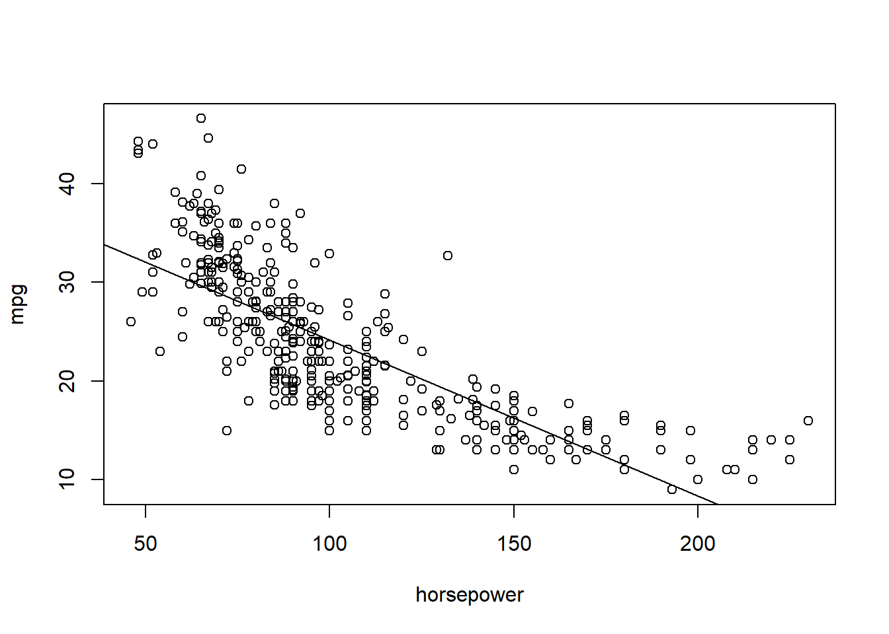
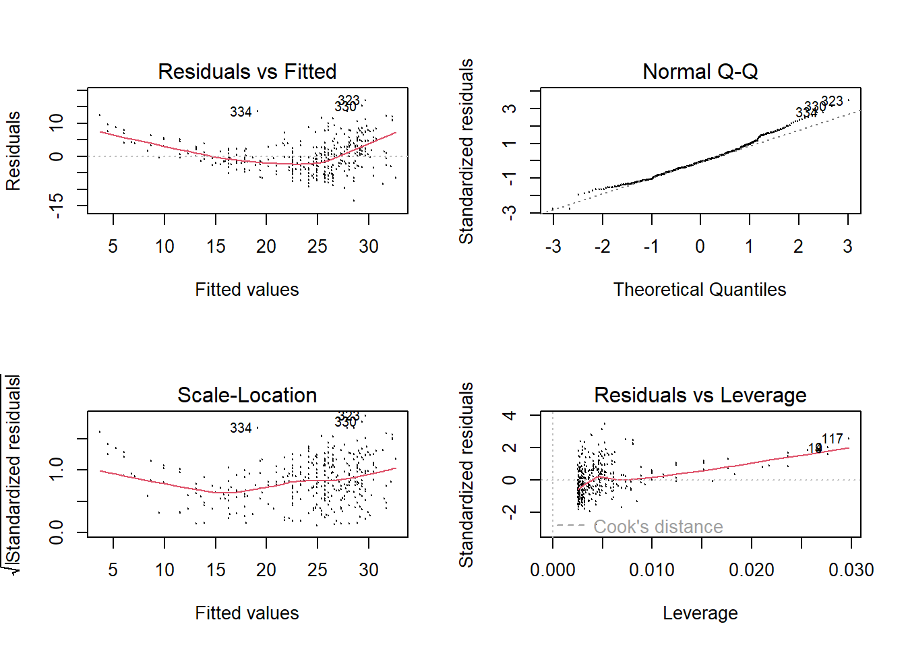
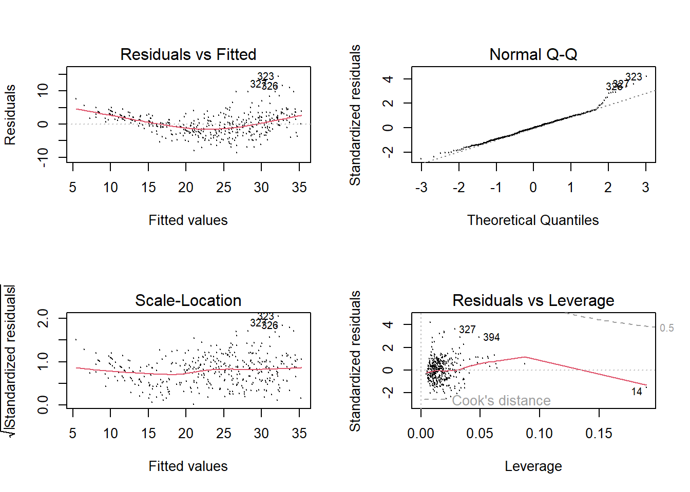

Practical 1
For the tasks below, you will require the Auto dataset from the core textbook (James et. al 2021).
This dataset is part of the ISRL2 package. By loading the package, the
Auto dataset loads automatically:
library(ISLR2)
Remember to install it first
install.packages("ISLR2")
This data file (text format) contains 398 observations of 9 variables. The variables are:
- mpg: miles per gallon
- cylinders: Number of cylinders between 4 and 8
- displacement: Engine displacement (cu. inches)
- horsepower: Engine horsepower
- weight: Vehicle weight (lbs.)
- acceleration: Time to accelerate from 0 to 60 mph (sec.)
- year: Model year
- origin: Origin of car (1. American, 2. European, 3. Japanese)
- name: Vehicle name
Task 1
Use the lm() function to perform simple linear regression with mpg
as the response and horsepower as the predictor. Store the output in
an object called fit.
Task 2
Have a look at the results of the model.
##
## Call:
## lm(formula = mpg ~ horsepower, data = Auto)
##
## Residuals:
## Min 1Q Median 3Q Max
## -13.5710 -3.2592 -0.3435 2.7630 16.9240
##
## Coefficients:
## Estimate Std. Error t value Pr(>|t|)
## (Intercept) 39.935861 0.717499 55.66 <2e-16 ***
## horsepower -0.157845 0.006446 -24.49 <2e-16 ***
## ---
## Signif. codes: 0 '***' 0.001 '**' 0.01 '*' 0.05 '.' 0.1 ' ' 1
##
## Residual standard error: 4.906 on 390 degrees of freedom
## Multiple R-squared: 0.6059, Adjusted R-squared: 0.6049
## F-statistic: 599.7 on 1 and 390 DF, p-value: < 2.2e-16Is there a relationship between the predictor and the response?
The slope coefficient (-0.157845) is statistically significant
(<2e-16 ***). We can conclude that there is evidence to suggest a
negative relationship between miles per gallon and engine horsepower.
For a one-unit increase in engine horsepower, miles per gallon are
reduced by 0.16.
Task 3
What is the associated 95% confidence intervals for predicted miles per
gallon associated with an engine horsepower of 98? Hint: use the
predict() function. For confidence intervals, set the interval
argument to confidence.
## fit lwr upr
## 1 24.46708 23.97308 24.96108Task 4
How about the prediction interval for the same value?
## fit lwr upr
## 1 24.46708 14.8094 34.12476Are the two intervals different? Why?
The prediction interval (lower limit 14.8094 and upper limit 34.12476) is wider (and therefore less precise) than the confidence interval (lower limit 23.97308 and upper limit 24.96108). The confidence interval measures the uncertainty around the estimate of the conditional mean whilst the prediction interval takes into account not only uncertainty but also the variability of the conditional distribution.
Task 5
Using base R, plot the response and the predictor as well as the least squares regression line. Add suitable labels to the X and Y axes.

Task 6
Use base R to produce diagnostic plots of the least squares regression fit. Display these in a 2X2 grid.

Task 7
Subset the Auto dataset such that it excludes the name and origin variables and store this subsetted dataset in a new object called quant_vars.
Task 8
Compute a correlation matrix of all variables.
## mpg cylinders displacement horsepower weight
## mpg 1.0000000 -0.7776175 -0.8051269 -0.7784268 -0.8322442
## cylinders -0.7776175 1.0000000 0.9508233 0.8429834 0.8975273
## displacement -0.8051269 0.9508233 1.0000000 0.8972570 0.9329944
## horsepower -0.7784268 0.8429834 0.8972570 1.0000000 0.8645377
## weight -0.8322442 0.8975273 0.9329944 0.8645377 1.0000000
## acceleration 0.4233285 -0.5046834 -0.5438005 -0.6891955 -0.4168392
## year 0.5805410 -0.3456474 -0.3698552 -0.4163615 -0.3091199
## acceleration year
## mpg 0.4233285 0.5805410
## cylinders -0.5046834 -0.3456474
## displacement -0.5438005 -0.3698552
## horsepower -0.6891955 -0.4163615
## weight -0.4168392 -0.3091199
## acceleration 1.0000000 0.2903161
## year 0.2903161 1.0000000Did you use the Auto dataset or the quant_vars object? Why does it matter which data object you use?
To compute the correlation matrix using all variables of a data object, these variables must all be numeric. In the Auto data object, the name variable is coded as a factor.
class(Auto$name)
[1] "factor"
Therefore, if you try to use the cor() function with Auto dataset
without excluding the name variable, you will get an error.
cor(Auto)
Error in cor(Auto) : 'x' must be numeric.
Also, whilst the origin variable is of class integer and will not
pose a problem when you apply the cor() function, you’ll remember from
the variable description list that this is a nominal variable with its
categories numerically labelled.
Compute the correlation matrix using quant_vars.
Task 9
Using the quant_vars object, perform multiple linear regression with miles per gallon as the response and all other variables as the predictors.
Store the results in an object called fit2.
Task 10
Have a look at the results of the multiple regression model.
##
## Call:
## lm(formula = mpg ~ ., data = quant_vars)
##
## Residuals:
## Min 1Q Median 3Q Max
## -8.6927 -2.3864 -0.0801 2.0291 14.3607
##
## Coefficients:
## Estimate Std. Error t value Pr(>|t|)
## (Intercept) -1.454e+01 4.764e+00 -3.051 0.00244 **
## cylinders -3.299e-01 3.321e-01 -0.993 0.32122
## displacement 7.678e-03 7.358e-03 1.044 0.29733
## horsepower -3.914e-04 1.384e-02 -0.028 0.97745
## weight -6.795e-03 6.700e-04 -10.141 < 2e-16 ***
## acceleration 8.527e-02 1.020e-01 0.836 0.40383
## year 7.534e-01 5.262e-02 14.318 < 2e-16 ***
## ---
## Signif. codes: 0 '***' 0.001 '**' 0.01 '*' 0.05 '.' 0.1 ' ' 1
##
## Residual standard error: 3.435 on 385 degrees of freedom
## Multiple R-squared: 0.8093, Adjusted R-squared: 0.8063
## F-statistic: 272.2 on 6 and 385 DF, p-value: < 2.2e-16Is there a relationship between the predictors and the response? Which predictors appear to have a statistically significant relationship to the response? What does the coefficient for the year variable suggest?
Two of the predictors are statistically significant: weight and year. The relationship between weight and mpg is negative which suggests that for a one pound increase in weight of vehicle, the number of miles per gallon the vehicle can travel decreases, whilst that of mpg and year is positive which suggests that the more recent the vehicle is, the higher the number of miles per gallon it can travel.
Task 11
Produce diagnostic plots of the multiple linear regression fit in a 2x2 grid.

Do the residual plots suggest any unusually large outliers? Does the leverage plot identify any observations with unusually high leverage?
One point has high leverage, the residuals also show a trend with fitted values.
Task 11
Fit separate linear regression models with interaction effect terms for: weight and horsepower, acceleration and horsepower, and cylinders and weight.
Code
Are any of the interaction terms statistically significant?
For each model, the interaction term is statistically significant.
Task 12
Using the Auto data object, apply transformations for the horsepower variable and plot the relationship between horsepower and mpg in a 2x2 grid.
- First plot: use the original variable;
- Second plot: apply log transform;
- Third plot: raise it to the power of two.
Code
Which of these transformations is most suitable?
The relationship between horsepower and miles per gallon is clearly non-linear (plot 1). The log transform seems to address this best.
Task 13
Now run a multiple regression model with all variables as before but this time, apply a log transformation of the horsepower variable.
Task 14
Have a look at the results.
##
## Call:
## lm(formula = mpg ~ ., data = quant_vars)
##
## Residuals:
## Min 1Q Median 3Q Max
## -8.6778 -2.0080 -0.3142 1.9262 14.0979
##
## Coefficients:
## Estimate Std. Error t value Pr(>|t|)
## (Intercept) 29.1713000 8.9291383 3.267 0.00118 **
## cylinders -0.3563199 0.3181815 -1.120 0.26347
## displacement 0.0088277 0.0068866 1.282 0.20066
## horsepower -8.7568129 1.5958761 -5.487 7.42e-08 ***
## weight -0.0044304 0.0007213 -6.142 2.03e-09 ***
## acceleration -0.3317439 0.1077476 -3.079 0.00223 **
## year 0.6979715 0.0503916 13.851 < 2e-16 ***
## ---
## Signif. codes: 0 '***' 0.001 '**' 0.01 '*' 0.05 '.' 0.1 ' ' 1
##
## Residual standard error: 3.308 on 385 degrees of freedom
## Multiple R-squared: 0.8231, Adjusted R-squared: 0.8203
## F-statistic: 298.5 on 6 and 385 DF, p-value: < 2.2e-16How do the results of model fit3 differ from those of model fit2?
The fit2 model results showed that only two predictors were statistically significant: weight and year. The fit3 model has two additional predictors that are statistically significant: acceleration as well as horsepower.Also, the coefficient values can now be interpreted more easily.